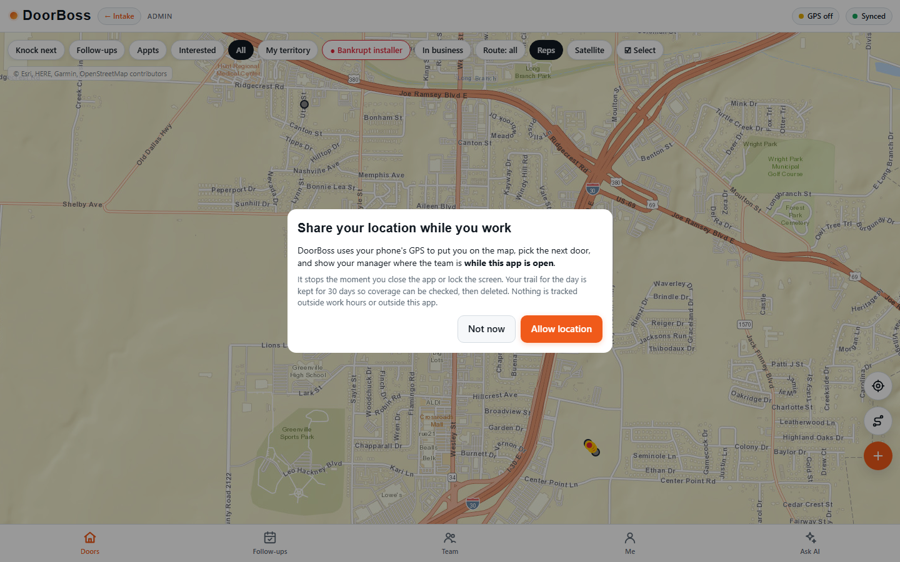
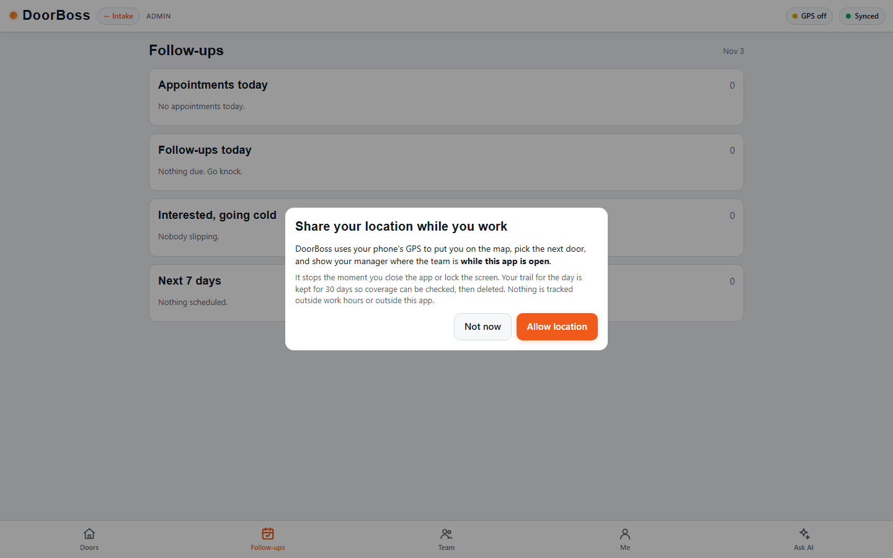
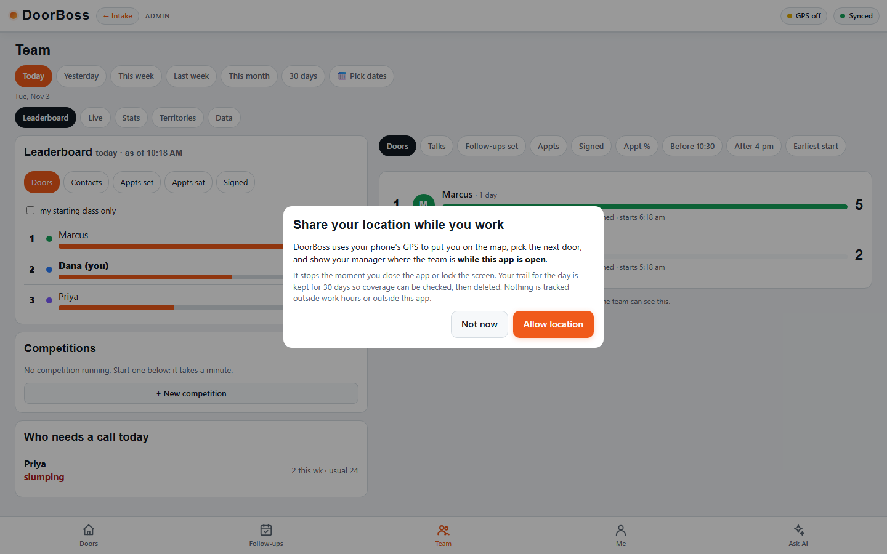
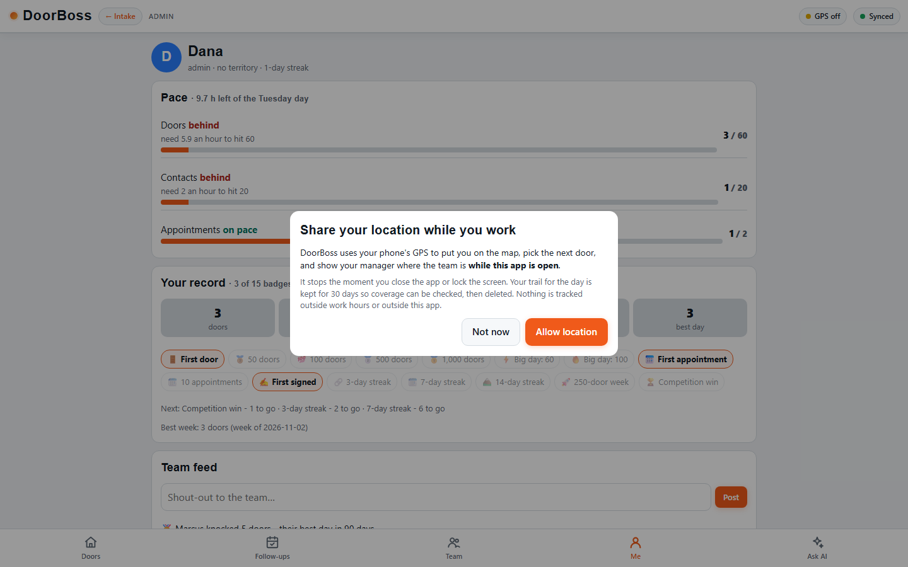
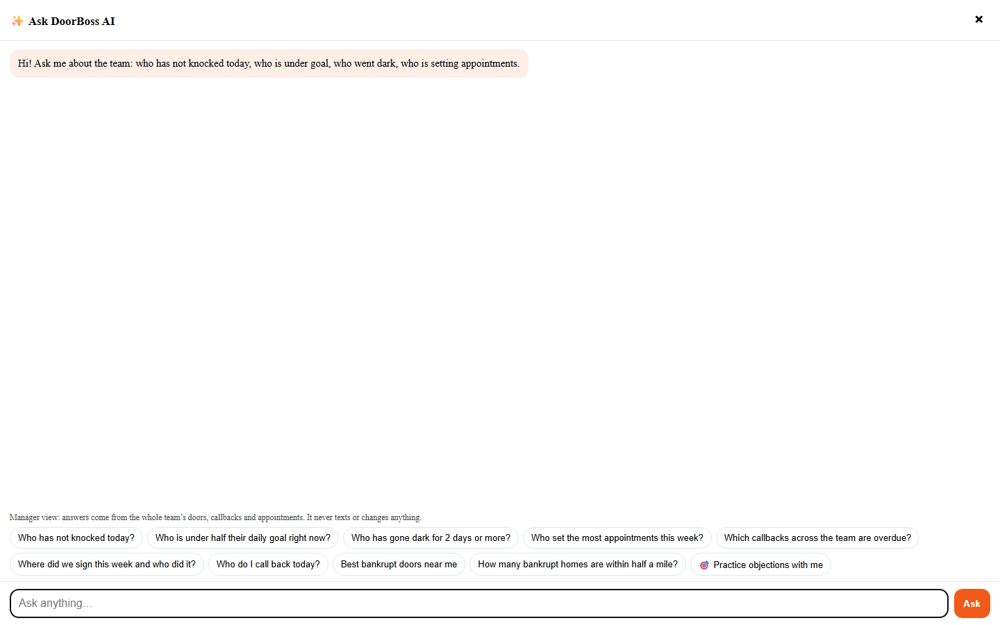
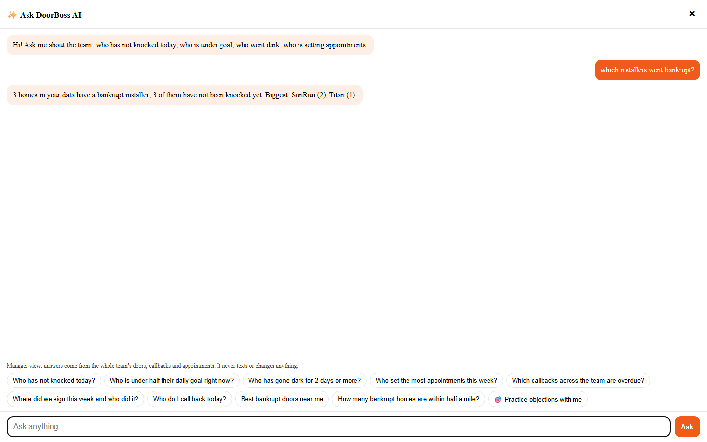

kanban P1731 / Dial Smart industry packs / Door to Door
What the port actually added
Dial Smart was an outbound dialer. This port turns it into a field sales platform - and it does
that without a second database, a second login, or a second safety model. Everything below runs inside
Dial Smart, on Dial Smart's own Supabase, behind Dial Smart's own rules.
PICS
What it actually looks like
Real screenshots, taken by a headless browser driving the port against the actual host.

tab 1 · doorsThe territory map, drawn from your own rows
Every pin is a d2d_properties row and the app draws it; the host only supplies the
coordinates. The map is a real canvas, not a placeholder - the proof script asserts it rendered with a
non-zero size (_d2d_realhost.mjs:102) and that this tab lands on view-map
(:145).

tab 2 · follow-upsThe queue a doorstep callback lands in
This is the screen the bridge fills. A knock that books writes one pending row here, tied to a Dial Smart
lead. It is deliberately near-empty in the fixture, and the proof script treats that as correct rather
than broken (:142-151).

tab 3 · teamA leaderboard the host computes, not the app
Ranked from door rows. In the fixture the script asserts Marcus shows 5 doors and Dana 3 -
Dana has a fourth row, but a GHL write-back is not a door - and that switching the chip to Signed
drops the reps with no signings (:211-224).

tab 4 · meYour own day, in one place
Pace against the day's goals, seat usage, your profile, and a feed of what actually happened. The script
asserts the feed carries the host's own sentence about 12 Oak St and that usage counts
3 seats (:241-242).

tab 5 · askAsk, answered from your own doors
No model in the loop - it counts rows and answers. The proof script typed
which installers went bankrupt? and asserts the answer names SunRun (:264).

drill-down · repOne rep, opened from the team list
The scorecard behind a name. The script asserts the detail view actually opened from the list and
rendered more than 200 characters of real content (:289-290).
Names, addresses and counts above come from the proof script's own hand-countable fixture, not from live
customer data. The point of these shots is that the host's arithmetic arrives on the screen intact.
01
Before and after
The dialer did not change. It gained a second half.
before
Dial Smart called people. It had pipelines, sequences, a browser phone, an AI coach on the line, and billing.
A rep walks a territory on their phone, knocks doors, books appointments on the spot, and the office
watches it happen live. The whole canvassing app runs natively inside Dial Smart - not an iframe,
not a link out, not an SSO hand-off.
+ 21 host route groups | + 9 database tables | + 3,514 lines of the real app, mounted natively
02
What it buys
Six reasons this is worth having, in the order they matter.
01
A new product to sell, not a new feature
Door-to-door becomes a third industry pack on the same platform as solar-exit and wholesale real
estate. One dialer, three ways to sell it - and the new one carries its own pipeline, its own screens
and its own reporting.
02
The doors feed the dialer
A door follow-up lands as a lead row plus a queued callback in the dialer's own tables. One queue,
one Callbacks screen, one set of rep stats. The field team and the phone team work the same list instead
of two CRMs that never talk.
03
It is the real app, not a rebuild
3,514 lines of the DoorBoss app, plus its stylesheet, mounted natively and driven through one host
seam. The extraction pipeline reproduces it byte for byte, so it looks and behaves exactly like the
app you already tested.
04
It runs with zero GoHighLevel
GHL is off by default and sits behind one flag, config.ghl. A test asserts that no GHL path
is reached and that GHL is never on by default anywhere. A client on GHL can still switch it back on.
05
It inherits the safety model, it does not bypass it
All nine tables carry company-scoped row security and the same tenant guard as the core tables. A
knock can never point across companies - a database trigger enforces it. And the dial is still behind the
platform launch lock.
06
It reuses instead of duplicating
Reps come from Dial Smart's own team screen - the pack refuses to add them. And database triggers do
the work DoorBoss did in a background worker, so there is no second service to run and keep alive.
03
The features, by area
Everything the vendored app asks for, answered by the host seam.
Canvassing
Territory map with draw-a-polygon and claim
Knock list and door detail sheet
Rep GPS plus breadcrumb trails, one row per rep
Appointments as first-class, workable records
Office messages, optionally about one house
Property state kept live by a trigger, never stale
Team performance
Leaderboard across eight metrics
Badges awarded from the rep's own record
Competitions, creation to a named winner
Shout and a live feed of what actually happened
Pace measured against the day's goals
Risk watch flags the rep who has gone quiet
AI on the doorstep
Ask panel - answers from your own doors, no model in the loop
38-rule coach for the objections reps actually hit
Property brief composed from the row's own facts
Practice mode to rehearse the door
Walking route laid out from where the rep is standing
Counts what is in the database instead of inventing a sentence
Sales kit
29 pitch-deck slides vendored and served by Dial Smart itself
English and Spanish, so no dependency on the DoorBoss host
The approved door line, answerable by name
Never says "cancel your solar" at the door
Getting data out
Company API keys, minted once and stored hashed
Outbound webhooks per company
Export log - owner-only, and recorded
Billing usage reported without inventing a charge
Honest edges
Skip tracing - not wired, and the card is told so
Push reminders - parked with a plain reason
Video recording - refused, not faked
Unknown route - a real 404, never an empty result
No silent dead ends for a user
04
The quality guarantees
Each one is a mechanism, not a promise.
FAITHFULIt is the app you already built and tested, reproduced byte for byte - not an approximation of it.4-step extraction pipeline, empty diff
STANDALONERuns with no GoHighLevel at all. GHL is off by default and re-enableable by one flag.config.ghl = false; asserted by test
TENANT-SAFEEvery table is company-scoped, and a knock can never point across companies.RLS + enforce_organization_scope + a scoping trigger
GOVERNEDExports are owner-only and recorded. Adding a rep is refused and routed to Dial Smart's team screen.refused, then logged - never half-done
HONESTWhere something is not wired yet, the host says so with a reason instead of failing quietly.skip trace, push, recording all answer plainly
SAFE BY DEFAULTAdding this pack cannot start a call. The dial is still behind the platform launch lock.launchSafety.ts + call-dispatcher/index.ts:19
05
The numbers
Counted from the repository, not estimated.
0
lines in the pack
0
pack files (13 with tests)
0
Door to Door tables
0
company row-security policies
0
host route groups
0
lines of the vendored app
0
doorstep coach rules
0
pitch-deck slides (en + es)
0
pack assertions, all green
0
commits that built it
FITS
How it fits together
Four pictures: the layers, the bridge, the tables, and what is switched on.
1. Three layers, one seam
The app was not rewritten to fit Dial Smart. It still speaks its own language; a single file translates.
That is why the visual match is exact and why there is no second backend to keep alive.
unchanged appthe one new fileyour existing database
2. What happens when a door books
This is the join between the two halves: a doorstep booking becomes a Dial Smart lead with a callback
queued. Every arrow below is a real function; the last box is deliberately closed.
works todaywaiting on your certification
3. The nine tables, and the roster function
Everything the app remembers lives in nine company-scoped tables. Rep names are the one thing it cannot
read directly, so a single gated function lends them back - one company at a time.
the fieldthe officethe exits
4. What is switched on, and what is not
Nothing here is hidden behind a promise. Everything off is off for a stated reason, and everything on can
be turned off.
Capability
State
Why
Canvassing, map, knocks
ON
Three core tables, company-scoped by row security.
Team, leaderboard, risk watch
ON
Computed by the host from the door rows themselves.
Ask, coach, property brief
ON
Reads your own rows. No model in the loop, so it cannot invent.
Pitch deck, English and Spanish
ON
29 slides vendored, served by Dial Smart - no external host needed.
GoHighLevel
OFF BY DEFAULT
Behind one flag, config.ghl. A test asserts it is never on by default.
Auto-dial a door follow-up
LOCKED
Platform-wide launch certification, not a gap in the port.
Skip tracing a door
NOT WIRED
The card says so, in words, with the reason - it never fails quietly.
Push reminders
NOT WIRED
Needs a service worker; the host declines politely instead.
Call recording
NOT WIRED
No recording pipeline in this stack yet.
Where this leaves you
The port is complete and the pack is live-ready. The only thing standing between the published app and a
working canvassing operation is the Publish click, which releases the five commits that are already
on main.
And the one thing deliberately not switched on is auto-dialing a door follow-up. That is a
platform-wide launch-certification decision, not a gap in the port - adding this pack cannot start a call
until you certify it.
Next action: Publish in the Lovable editor, then verify the live commit.